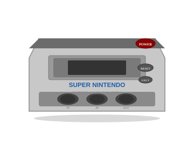

1990 年发布
Super Famicom (SFC)
超级任天堂 · 16位机巅峰 · RPG黄金时代
4910万
全球销量
16位
CPU位数
32,768色
最大色数
¥25,000
首发价格(日元)
📖 历史与背景
1990年11月21日，任天堂在日本推出Super Famicom（简称SFC），标志着16位游戏主机的巅峰时代。SFC的设计延续了FC的红白配色但线条更加圆润，手柄增加至4个按键（A/B/X/Y），并引入了L/R肩键，成为此后所有游戏手柄的标准配置。
SFC最大的技术亮点是"Mode 7"——一种硬件支持的2D仿射变换效果，可以实现旋转、缩放等伪3D效果。在《超级马里奥世界》的飞艇关卡和《最终幻想 VI》的开场动画中，Mode 7的效果令人震撼。
SFC与世嘉的Mega Drive（MD/Genesis）展开了激烈的16位主机大战。世嘉以"更快的处理器"和"街头感"的广告策略抢占北美市场，但SFC凭借更丰富的色彩和任天堂第一方游戏阵容，最终取得了领先优势。
⚙️ 硬件规格
CPU
Ricoh 5A22 16位 (3.58MHz)
显色能力
32,768色（同屏256色）
内存
128KB RAM + 64KB VRAM
音效
8通道ADPCM（S-DSP芯片）
分辨率
256×224 ~ 512×448
特殊功能
Mode 7（伪3D变换）
存储介质
游戏卡带（最高32MB/48Mbit）
手柄
A/B/X/Y + L/R肩键
🎮 经典游戏阵容
时空之轮
1995 · RPG
坂口博信+堀井雄二+鸟山明，梦幻组合
最终幻想VI
1994 · RPG
像素RPG巅峰，14名角色宏大叙事
塞尔达传说：众神的三角力量
1991 · 动作冒险
SFC最强游戏之一，双世界迷宫设计
超级马里奥世界
1990 · 平台跳跃
首发护航游戏，耀西首次登场
超级大金刚
1994 · 平台跳跃
Rare神作，预渲染3D画面震撼
圣剑传说3
1995 · ARPG
六主角多线剧情，动作RPG巅峰
火焰之纹章: 多拉基亚776
1999 · 战棋
SFC末期战棋神作，超高难度
银河战士
1994 · 动作冒险
萨姆斯归来，地图探索教科书
🏆 市场表现与影响
- 全球销量：4910万台，在日本击败了Mega Drive，北美与Genesis平分秋色
- RPG黄金时代：SFC孕育了《最终幻想》系列、《勇者斗恶龙》系列、《圣剑传说》系列，被誉为日式RPG的黄金时代
- SuperFX芯片：SFC卡带内置处理器芯片（如《星际火狐》《耀西岛》），实现了硬件扩展
- Sony的合作与决裂：索尼曾与任天堂合作开发SFC的CD-ROM扩展（PlayStation计划），但因合同分歧导致合作破裂，索尼随后自立门户推出PlayStation
- Nintendo Power：日本推出的SFC专用烧录机服务，玩家可到店铺烧录游戏到专用卡带
🔧 型号演变
- SFC初版（1990日本）：红白配色，圆润造型，手柄多彩按键
- SNES初版（1991北美）：方形紫色设计，与日版外形完全不同
- SNES Jr./SFC Jr.（1997）：低成本缩水版，取消S-Video输出和RGB输出，更小更轻
💡 趣闻与冷知识
- SFC与索尼的CD-ROM合作破裂后，索尼在原技术基础上推出了世界上第一台PlayStation——某种意义上，PS1是SFC的"私生子"
- SFC的《时空之轮》由"梦之队"打造——最终幻想的坂口博信、勇者斗恶龙的堀井雄二、龙珠的鸟山明。三家粉丝无可挑剔
- 《超级大金刚》的3D渲染技术由Rare公司从SGI工作站预渲染，然后转成SNES色板。这是"预渲染3D"在2D主机上的经典案例
- SFC的"Mode 7"可以实时旋转和缩放背景图层——《超级马里奥世界》的飞行关卡、《马里奥赛车》的赛道地图都用到了这项技术
- SFC游戏《星际火狐》内置SuperFX加速芯片，让16位主机跑出了3D多边形画面，震惊业界
- SFC在美国被称作"Super Nintendo Entertainment System (SNES)"，和日版SFC外形完全不同，但内部硬件几乎一样